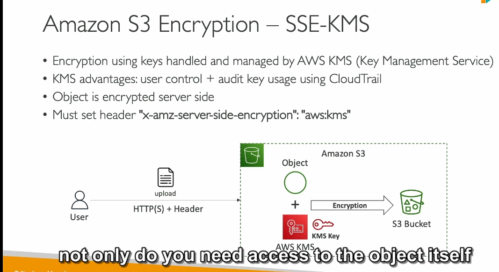

- từ chối tất cả api put nếu như object không được mã hóa bởi ...
note là nó xem policy trước mới xem đến default encryp
Object Encryption trong Amazon S3
1. Các phương pháp mã hóa trên Amazon S3
Amazon S3 hỗ trợ 4 phương pháp mã hóa dữ liệu:
- Server-Side Encryption (SSE):
- SSE-S3: Mã hóa với khóa do Amazon S3 quản lý.
- SSE-KMS: Mã hóa với khóa do AWS Key Management Service (KMS) quản lý.
- SSE-C: Mã hóa với khóa do khách hàng cung cấp.
- Client-Side Encryption: Mã hóa dữ liệu phía khách hàng trước khi upload.
2. Server-Side Encryption (SSE)
a. SSE-S3
- Khóa mã hóa: AWS quản lý hoàn toàn, không cho người dùng truy cập.
- Loại mã hóa: AES-256.
- Cách sử dụng:
- Gửi header
x-amz-server-side-encryption: AES256trong yêu cầu. - SSE-S3 được bật mặc định cho các bucket và object mới.
- Quy trình hoạt động:
- Người dùng upload dữ liệu lên S3.
- Dữ liệu được mã hóa server-side bằng khóa do S3 sở hữu.
- Dữ liệu mã hóa được lưu trữ trong bucket.
b. SSE-KMS
- Khóa mã hóa: Do AWS KMS quản lý, người dùng có quyền kiểm soát.
- Ưu điểm:
- Theo dõi và ghi lại việc sử dụng khóa qua CloudTrail.
- Có thể tạo và chỉnh sửa quyền sử dụng khóa.
- Cách sử dụng:
- Gửi header
x-amz-server-side-encryption: aws:kms. - Có thể chỉ định một KMS key cụ thể trong yêu cầu.
- Hạn chế:
- Gọi API KMS để mã hóa/giải mã dữ liệu có thể bị giới hạn theo quota API của KMS.
- Quota API (5,000–30,000 yêu cầu/giây) tùy theo khu vực, có thể tăng qua Service Quotas Console.
c. SSE-C
- Khóa mã hóa: Do người dùng quản lý và cung cấp cho AWS thông qua HTTPS.
- Cách hoạt động:
- Người dùng cung cấp khóa mã hóa khi tải dữ liệu lên.
- AWS chỉ sử dụng khóa này để mã hóa/giải mã dữ liệu và không lưu trữ nó.
- Yêu cầu:
- Mọi yêu cầu đều phải dùng giao thức HTTPS.
- Phải gửi khóa mã hóa qua HTTP header.
3. Client-Side Encryption
- Quy trình:
- Dữ liệu được mã hóa phía khách hàng trước khi tải lên S3.
- Khóa mã hóa do khách hàng quản lý.
- Ưu điểm:
- AWS không tham gia vào việc mã hóa hoặc giải mã.
- Đảm bảo dữ liệu được bảo mật trước khi truyền lên S3.
4. Encryption In Transit
- SSL/TLS: Mã hóa dữ liệu trong quá trình truyền tải giữa máy khách và S3.
- Cách sử dụng:
- Bật HTTPS khi giao tiếp với Amazon S3.
- Đảm bảo rằng dữ liệu không bị rò rỉ trong quá trình truyền.
Tóm tắt:
- SSE-S3: Đơn giản, AWS quản lý toàn bộ.
- SSE-KMS: Bảo mật cao hơn với quyền kiểm soát khóa.
- SSE-C: Người dùng chịu trách nhiệm quản lý khóa.
- Client-Side Encryption: Bảo mật tối đa, nhưng phức tạp hơn trong quản lý.
DSSE-KMS (Double Server-Side Encryption with KMS) là một phương pháp mã hóa trong AWS, kết hợp sử dụng KMS (Key Management Service) để tăng cường bảo mật khi mã hóa dữ liệu. Đây là phương pháp nâng cao, chủ yếu áp dụng trong các kịch bản yêu cầu bảo mật nghiêm ngặt.
Tổng quan về DSSE-KMS
- DSSE viết tắt của Double Server-Side Encryption, nghĩa là dữ liệu được mã hóa hai lần ở cấp server.
- Cả hai lớp mã hóa đều sử dụng các khóa được quản lý bởi KMS.
- DSSE-KMS áp dụng cho dữ liệu lưu trữ trong Amazon S3.
Cách hoạt động của DSSE-KMS
-
Quy trình mã hóa:
-
Lớp mã hóa thứ nhất:
- Dữ liệu được mã hóa bằng SSE-KMS, trong đó sử dụng một khóa mã hóa từ KMS.
-
Lớp mã hóa thứ hai:
- Sau khi mã hóa lần đầu, dữ liệu đã mã hóa được mã hóa lại bằng một khóa KMS khác.
-
Quy trình giải mã:
-
Để truy cập dữ liệu, bạn cần giải mã theo thứ tự ngược lại:
- Dữ liệu được giải mã bằng khóa của lớp thứ hai.
- Sau đó, giải mã lớp thứ nhất để lấy dữ liệu gốc.
-
Yêu cầu:
- Bạn cần có quyền truy cập cả hai khóa mã hóa KMS để thực hiện quá trình mã hóa/giải mã.
Ưu điểm của DSSE-KMS
-
Tăng cường bảo mật:
-
Dữ liệu được bảo vệ với hai lớp mã hóa độc lập.
-
Ngay cả khi một lớp mã hóa bị xâm phạm, lớp thứ hai vẫn bảo vệ dữ liệu.
-
Kiểm soát chặt chẽ qua KMS:
-
Bạn có thể quản lý, giám sát và kiểm tra việc sử dụng các khóa thông qua AWS CloudTrail.
-
Tích hợp tốt trong môi trường AWS:
- DSSE-KMS hoạt động mượt mà với các dịch vụ AWS khác, đặc biệt khi cần bảo mật dữ liệu nhạy cảm.
Hạn chế của DSSE-KMS
-
Chi phí cao hơn:
-
Sử dụng nhiều lớp mã hóa và các API của KMS có thể làm tăng chi phí.
-
Độ phức tạp:
-
Cần thiết lập và quản lý nhiều khóa KMS.
-
Quản lý quyền truy cập hai khóa độc lập yêu cầu kiểm soát chặt chẽ.
-
Giới hạn hiệu suất:
- Các API của KMS, như GenerateDataKey và Decrypt, đều có giới hạn số lần gọi API mỗi giây.
- Điều này có thể trở thành điểm nghẽn hiệu suất nếu bạn xử lý lượng dữ liệu lớn.
Khi nào nên dùng DSSE-KMS?
- Khi bạn làm việc với dữ liệu cực kỳ nhạy cảm, như dữ liệu tài chính, y tế hoặc thông tin nhận dạng cá nhân (PII).
- Trong các hệ thống yêu cầu tuân thủ các quy định bảo mật nghiêm ngặt, như HIPAA, GDPR, hoặc PCI DSS.
- Khi bạn cần bảo mật tối đa để chống lại các mối đe dọa từ cả bên trong và bên ngoài.